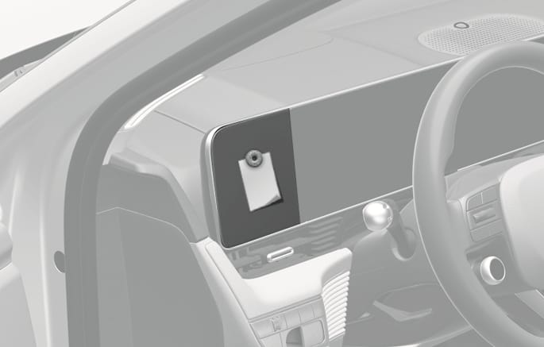

클러스터 사이드 마그네틱 패널

2C_ClusterSidePannel
클러스터 사이드 마그네틱 패널은 자석을 활용하여 통행권, 주차권, 영수증 등을 부착할 수 있는 패드입니다.
스마트폰 등 무겁거나 파손의 우려가 있는 물건은 부착하지 마십시오. 주행 중 물건이 떨어지면 파손될 수 있습니다.
안전을 위해 클러스터 사이드 마그네틱 패널에 스마트폰 등 무겁거나 날카로운 물건을 부착하지 마십시오. 주행 중 물건이 떨어지면 운전자가 부상을 입거나, 주의가 분산되어 사고가 발생할 위험이 높아집니다.